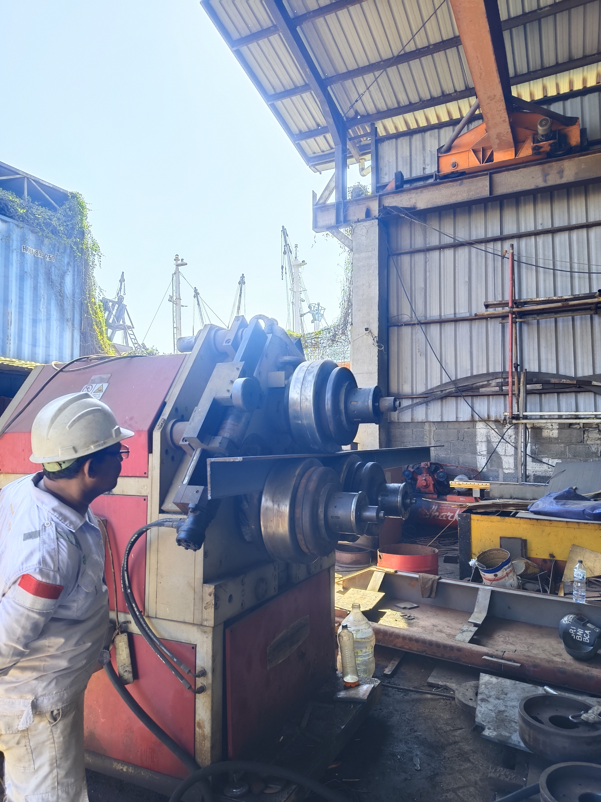

PROYEK PENGEMBANGAN GALANGAN KAPAL — 2026
MERANCANG MASA DEPAN INDUSTRI PERKAPALAN.
Perencanaan Galangan Kapal Terintegrasi, Rekayasa, dan Pengembangan Teknologi.
JELAJAHI PROYEK KAMI ↗
PROYEK PENGEMBANGAN GALANGAN KAPAL — 2026
Perencanaan Galangan Kapal Terintegrasi, Rekayasa, dan Pengembangan Teknologi.
JELAJAHI PROYEK KAMI ↗01 / PENDAHULUAN
Proyek ini menggunakan PT. Dumas Tanjung Perak Shipyards sebagai objek kajian untuk mengevaluasi fasilitas dan kegiatan operasional galangan. Hasil evaluasi tersebut menjadi dasar penyusunan konsep pengembangan PT. Royale Shipyard.
LATAR BELAKANG PENGEMBANGAN
PT. Dumas Tanjung Perak Shipyards memiliki dua lokasi operasional utama, yaitu Nilam Barat 12 dan Nilam Barat 24–26. Kedua lokasi tersebut memiliki karakteristik fasilitas dan aktivitas produksi yang berbeda untuk mendukung pembangunan kapal baru maupun pekerjaan reparasi.
Perbedaan fasilitas dan kondisi operasional tersebut menjadi dasar evaluasi dalam penyusunan rencana pengembangan. Melalui proyek ini, dirancang konsep PT. Royale Shipyard dengan perencanaan tata letak terintegrasi serta usulan modernisasi fasilitas dan teknologi produksi.
ARAH PENGEMBANGAN
Mengidentifikasi kondisi fasilitas, peralatan produksi, serta permasalahan operasional berdasarkan pengamatan pada PT. Dumas Tanjung Perak Shipyards.
Menyusun konsep tata letak galangan PT. Royale Shipyard dengan mempertimbangkan kebutuhan fasilitas, alur produksi, dan efisiensi operasional.
Mengusulkan peningkatan peralatan produksi, pengembangan fasilitas, serta penerapan teknologi untuk mendukung kegiatan operasional galangan.
Menghasilkan konsep pengembangan galangan kapal yang terencana, efisien, dan mampu mendukung kebutuhan industri perkapalan.
02 / PENGEMBANGAN FASILITAS
Evaluasi fasilitas eksisting dan identifikasi peluang peningkatan teknologi melalui perencanaan galangan kapal modern.

01 / PRODUCTION EQUIPMENTMesin bending eksisting masih menggunakan teknologi yang relatif lama.
Evaluasi modernisasi mesin untuk mendukung proses pembentukan material dan efisiensi produksi.
 02 / BLOCK ASSEMBLY
02 / BLOCK ASSEMBLY
Penggunaan sistem live jig yang berpotensi mengalami perubahan bentuk saat proses leveling blok.
Evaluasi penerapan embedded jig dengan sistem penanaman atau penjangkaran pada fondasi.
Beberapa peralatan NC Cutting masih menggunakan teknologi lama.
Evaluasi penggunaan teknologi pemotongan yang lebih modern.
 04 / MATERIAL HANDLING
04 / MATERIAL HANDLING
Berdasarkan observasi, terdapat kerusakan crane yang berulang dan antrean penggunaan peralatan.
Evaluasi keandalan peralatan, kapasitas pengangkatan, dan kelancaran proses pemindahan material.
03 / PROFIL GALANGAN
PT. Dumas Tanjung Perak Shipyards merupakan perusahaan galangan kapal yang bergerak dalam pembangunan kapal baru serta perbaikan dan reparasi kapal. Perusahaan ini menjadi objek kajian dalam perencanaan pengembangan galangan.
Tahun Berdiri
Lokasi Operasional
Kapal Terbangun
Pekerjaan Reparasi
LOKASI OPERASIONAL
Surabaya, Jawa Timur
Area ini lebih banyak dimanfaatkan untuk pembangunan kapal, kegiatan sandblasting, pemotongan material menggunakan NC Cutting, serta penyimpanan material produksi.
Surabaya, Jawa Timur
Area ini mendukung kegiatan fabrikasi, perakitan blok, pembangunan kapal baru, serta pekerjaan perbaikan dan reparasi kapal.
04 / ANALISIS STRATEGIS
Evaluasi strategis terhadap galangan referensi berdasarkan kondisi operasional dan peluang pengembangan.
STRENGTHS / KEKUATAN
WEAKNESSES / KELEMAHAN
OPPORTUNITIES / PELUANG
THREATS / ANCAMAN
05 / MASTERPLAN PENGEMBANGAN
Perbandingan tata letak fasilitas eksisting dengan rancangan pengembangan galangan kapal yang terintegrasi.
Kondisi tata letak pada dua lokasi galangan sebelum dilakukan perencanaan integrasi.

Tata letak fasilitas galangan pada lokasi Nilam Barat 12.

Tata letak fasilitas galangan pada lokasi Nilam Barat 24–26.
Rencana penggabungan perencanaan tata letak kedua lokasi ke dalam satu rancangan pengembangan galangan.
Visualisasi layout CAD terbaru akan ditampilkan pada bagian ini.
Visualisasi rancangan pengembangan galangan dalam bentuk model tiga dimensi.
Model 3D dari Rhino 8 akan ditampilkan pada bagian ini.
06 / ENGINEERING ANALYSIS
Identifikasi kondisi fasilitas eksisting dan kendala operasional sebagai dasar perencanaan peningkatan teknologi dan sistem produksi galangan.
PRODUCTION EQUIPMENT
Beberapa mesin bending dan NC Cutting masih menggunakan teknologi lama sehingga diperlukan evaluasi terhadap kemampuan dan efisiensi peralatan.
BLOCK ASSEMBLY
Penggunaan live jig memiliki risiko perubahan bentuk ketika proses leveling blok sehingga diperlukan evaluasi sistem jig yang lebih stabil.
LIFTING EQUIPMENT
Gangguan pada crane dan antrean penggunaan peralatan pengangkatan menjadi salah satu kendala dalam aktivitas operasional.
PRODUCTION FLOW
Penataan fasilitas dan perpindahan material perlu dievaluasi untuk mendukung kelancaran proses produksi kapal.
07 / TECHNOLOGY DEVELOPMENT
Rencana pengembangan teknologi dan fasilitas untuk meningkatkan keandalan peralatan, mendukung proses produksi, serta mengoptimalkan aktivitas operasional galangan kapal.
PRODUCTION EQUIPMENT
Peningkatan teknologi mesin bending untuk mendukung proses pembentukan material dan kebutuhan fabrikasi kapal.
BLOCK ASSEMBLY
Perencanaan penggunaan jig permanen yang tertanam pada fondasi untuk mendukung kestabilan selama proses leveling dan perakitan blok kapal.
MATERIAL PROCESSING
Evaluasi dan pembaruan teknologi pemotongan material untuk mendukung kebutuhan fabrikasi komponen kapal.
MATERIAL HANDLING
Peningkatan keandalan sistem pengangkatan untuk mendukung pemindahan material dan blok kapal.
OPERATIONAL SYSTEM
Optimalisasi alur perpindahan material dan penempatan fasilitas berdasarkan rancangan tata letak pengembangan.
08 / INVESTMENT & DEVELOPMENT ROADMAP
Perencanaan prioritas investasi dan tahapan pengembangan fasilitas secara bertahap untuk mendukung peningkatan kapasitas dan efisiensi operasional galangan kapal.
Modernisasi mesin produksi
Pengembangan Embedded Jig System
Peningkatan sistem crane dan lifting
Optimalisasi fasilitas dan alur produksi
Fondasi Pengembangan
Implementasi Pengembangan
Pengembangan Berkelanjutan
*Tahapan dan rentang waktu merupakan konsep awal pengembangan dan dapat disesuaikan dengan hasil perencanaan teknis serta evaluasi investasi.